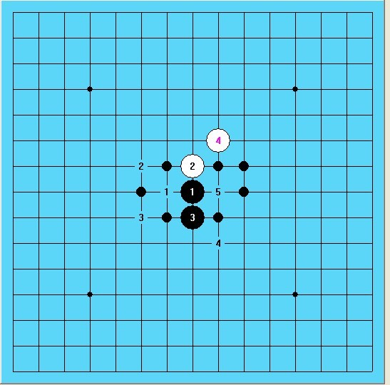
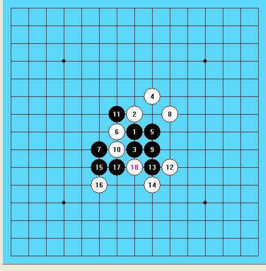
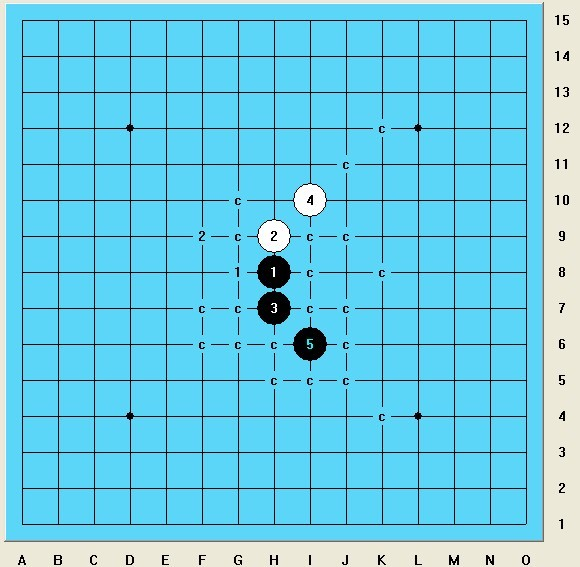

规则论（二）
首页
五子棋新闻
#1 规则论（二） 作者：游戏人间 发表时间：2013-5-13 19:40:43
二
再来看看棋手在下棋中到底需要算多少东西，以此来分析下为何博弈规则更符合职业化的发展。
看几个图：
图1

这是2009年世锦赛我对坦克的一局，很多人都知道这盘棋我黑5打点错误速败。但是事实上这是我在那届世锦赛最满意的一局。也正是因为这局让我找到了状态并在之后战胜了中村。
这盘我开局要求松月4打，坦克几乎没思考就走了这个白4.这对于我来说是一个有点熟悉但是事实上很陌生的局面。因为知道结论，但自己从未下过。图一上的点就是我当时挨个计算过的。从第五手一直算到必胜或者必败或者可以接受的局面。最后在黑5的计算上我思考了125分钟，最后十分钟实在没办法了才落子了。这也导致了计算出了一个误差。当然这种误差如果在国内可能依然能骗到（比如我蒲月胜段然那盘）。这个误差就是如图2的点。
图2

我算到这个位置没算出后面的必胜。当然现在很多人都知道这个后面的必胜，这是一个很古老的定式。而对我来说没算到胜就要面临崩溃的局面，这是无法接受的。所以最终选择了图一中的4这个点。
图3

我们再来看图三：这里出现了另一个误差，也正是这个误差导致了我选择了图二中的4这个点。就是我算完觉得白只能走图三中1这个点，而忽略了图三中2这个白棋的必胜点。那么最终结果不难预料了，坦克很快走出了图三中的2这个点，最后下完他时间也没用10分钟。但是这盘棋我计算了多少点呢？也许没有一个直观的衡量。但是这恰好是从黑5开始计算的，这使我想到也许五子棋就是应该从开局阶段就计算才能体现出每个人真实的实力。比如围棋这个公认的最难棋种，它的开局阶段难倒全部都是走定式吗？不需要计算吗？不需要从局部形状来发散的思考设计吗？千篇一律的定式恰好是围棋所规避的，五子棋要想真正成为出色的棋种也必然要规避这一特点。
有人说博弈规则开局阶段需要计算的量太大了，其实不然。我上面的例子是在开局阶段计算周围所有的点，那么如果换成博弈规则我只需要计算出一个能接受的局面就可以。当然那也需要计算，没有计算的开局规则只有RIF和山口这种传统式规则。而且五子棋本身就是紧凑的棋种，哪怕换了博弈规则某一方也不可能乱走，因为乱走会面临被交换的窘境。再来谈计算量的问题，我上面的例子是在五子棋未成熟的情况下需要计算的量。那么五子棋真正想成为职业化的话，我计算的这点东西很可能就是初学者的必须功课了。真正的高手需要的计算量肯定还要翻几倍的。那么对于开局阶段算几颗子还难吗？估计那时候江南新绿这样的也就是一个最外围的爱好者了。。。
吃饭了。。晚点有空再写三。。
［ 圊籽 于 2013-5-13 19:49:58 时花20金币送鲜花一朵］
［ 圊籽 于 2013-5-13 19:49:58 时花20金币送鲜花一朵］
［ 梧桐风 于 2013-5-13 21:01:19 时花20金币送鲜花一朵］
［ 梧桐风 于 2013-5-13 21:01:19 时花20金币送鲜花一朵］
［ 梧桐风 于 2013-5-13 21:01:19 时花20金币送鲜花一朵］
［此帖子已被 黄药师 在 2013-5-13 21:36:57 编辑过］
［ ^版徒 于 2013-5-14 15:00:44 时花20金币送鲜花一朵］
［ ^版徒 于 2013-5-14 15:00:44 时花20金币送鲜花一朵］
［ ^版徒 于 2013-5-14 15:00:44 时花20金币送鲜花一朵］
［ ^版徒 于 2013-5-14 15:00:44 时花20金币送鲜花一朵］
［ ^版徒 于 2013-5-14 15:00:44 时花20金币送鲜花一朵］
［ ^版徒 于 2013-5-14 15:00:44 时花20金币送鲜花一朵］
［ ^版徒 于 2013-5-14 15:00:44 时花20金币送鲜花一朵］
［ ^版徒 于 2013-5-14 15:00:44 时花20金币送鲜花一朵］
［ ^版徒 于 2013-5-14 15:00:44 时花20金币送鲜花一朵］
［ ^版徒 于 2013-5-14 15:00:44 时花20金币送鲜花一朵］
#2 Re:规则论（二） 作者：游戏人间 发表时间：2013-5-13 19:42:25
谁帮我改下这图怎么显示出来啊
#3 Re:规则论（二） 作者：兔子哥哥 发表时间：2013-5-13 19:49:50
游戏人间老师觉得放开天元，放开妖刀，回归到19道盘，三手交换，五手两打，先手禁手。这样的规则开局计算量大吗？
#4 Re:规则论（二） 作者：游戏人间 发表时间：2013-5-13 20:01:44
一点也不大，只会更缩小RIF的可下开局。因为RIF下很多局面能下就因为棋盘的限制。。当然在改变RIF的基础上是否改变棋盘大小，我还是持赞同态度的。。
#5 Re:规则论（二） 作者：梧桐风 发表时间：2013-5-13 21:03:56
@江南新绿 躺着也中枪。。
#6 Re:规则论（二） 作者：江南新绿 发表时间：2013-5-13 21:32:01
谢谢大鱼还能想起我来，哈哈。虽然我的实际成绩一般。
不过你的规则论什么时候能说到重点啊。
打个酱油，图1的话黑棋没有美感。
当然选择的路径不一样，可以得到不同的结果。比如围棋中的征子与引征，通常来说计算上的难度的。但是如果交给计算机，按地毯算。算半天。有些时候我就在想，可以不这么无聊吗？可以不用无聊的方式来衡量吗？
所谓的高手，我个人觉得是算的更少，更经济。而不是他的脑力毫无用处。
好了，大鱼能说点有用的吗？
#7 Re:规则论（二） 作者：黄药师 发表时间：2013-5-13 21:38:02
图已经搞定，顺便帮你排了版
#8 Re:规则论（二） 作者：没事摆石子玩 发表时间：2013-5-14 4:03:19
噗，好吧我承认我笑了看了3楼和4楼。。忘了你的19道吧兔子哥哥 你要是实在喜欢天人感应，可以去下围棋。。。
#9 Re:规则论（二） 作者：与郎共五 发表时间：2013-5-14 9:32:02
有三个担心：开局B方计算量过大。进不了稳态期。有埋伏隐患。
#10 Re:游戏人间【==Re:规则论（二）==】 作者：兔子哥哥 发表时间：2013-5-14 19:17:08
妖刀开局和其他非天元开局呢？也不能下吗？谢谢
#11 Re:与郎共五【==Re:规则论（二）==】 作者：游戏人间 发表时间：2013-5-14 20:21:15
引用：
原文由 与郎共五 发表于 2013-5-14 9:32:02 :
有三个担心：开局B方计算量过大。进不了稳态期。有埋伏隐患。
首先开局B方如果计算量大的话那A方也小不了。。这是相对的。另外开局本来就需要计算的吧？这个所谓的量过大大概要有个范围吧？就比如我在这里所说的这盘棋，我觉得应该在五子棋职业化后成为基本功。。
另外所谓稳态期？这个词理解方法太多了，我不懂。。
埋伏隐患我不好说没有，但是目前没发现。也许存在也许根本不存在。但是不能因为假设存在就放弃一个好的规则而是用已经被证明存在隐患的规则吧？逻辑上好像说不通。。。
#12 Re:规则论（二） 作者：与郎共五 发表时间：2013-5-16 11:14:51
12连下将会必然,二手型将是每个棋手的主攻,且边12居多。长久研究后，B方更难。
稳态期：对应暂态期。就是大家对开局阶段的可能出现局面有相当的认识。不会因为独家研究吃遍天下。
有埋伏的设计会很多，理论上二手型达到225*224.
#13 Re:规则论（二） 作者：游戏人间 发表时间：2013-5-16 11:20:59
事实上。。。最近和朋友下了点博弈规则对局。。。12连下的全死了。。
#14 Re:游戏人间【==Re:规则论（二）==】 作者：梧桐风 发表时间：2013-5-16 11:23:40
引用：
原文由 游戏人间 发表于 2013-5-16 11:20:59 :
事实上。。。最近和朋友下了点博弈规则对局。。。12连下的全死了。。
所以黑1单走在天元是最佳手段？（引一下道长昨个群里说的，还没下过博弈规则 ）
）
#15 Re:规则论（二） 作者：游戏人间 发表时间：2013-5-16 11:26:33
也不见得。。但是在博弈规则实行的初级阶段貌似谁连走定型谁死的快。
#16 Re:规则论（二） 作者：与郎共五 发表时间：2013-5-16 11:48:38
这个情况的确，找准12还是有段时间的，
#17 Re:规则论（二） 作者：游戏人间 发表时间：2013-5-16 11:52:24
其实这里又涉及到中盘理解上了。。。设计连走的一方对中盘的理解要求很高的。。如果随手下局面都很容易判断。。估计博弈规则在一段时间内八卦互套都是可见的局面。。。
#18 Re:规则论（二） 作者：屏蔽 发表时间：2013-5-16 15:35:40
哎14楼你怎么这样 这种结论不藏着掖着怎么行